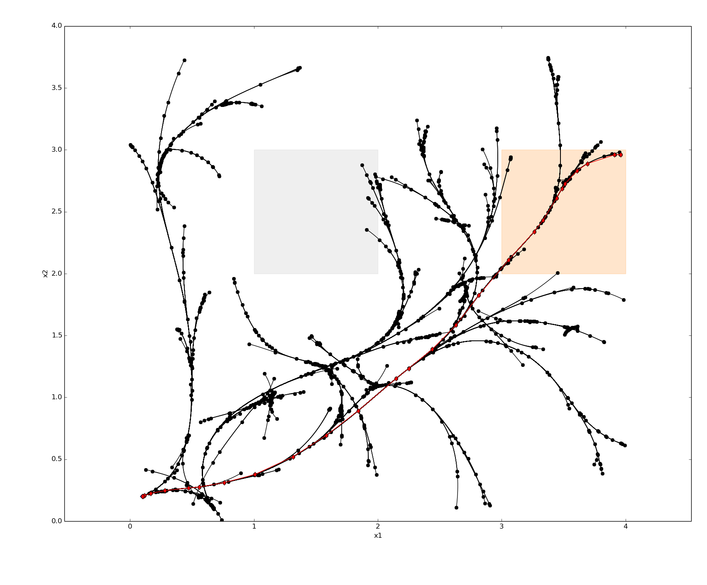
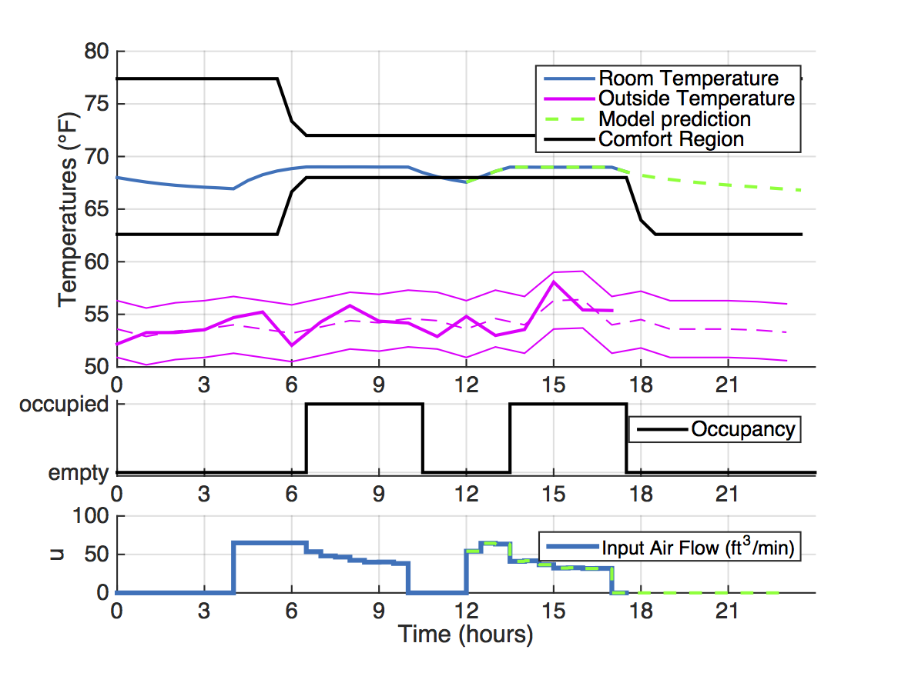
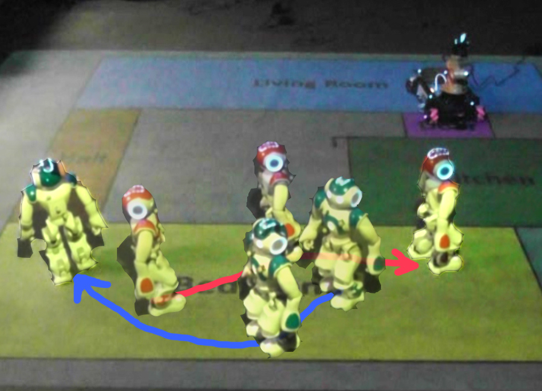
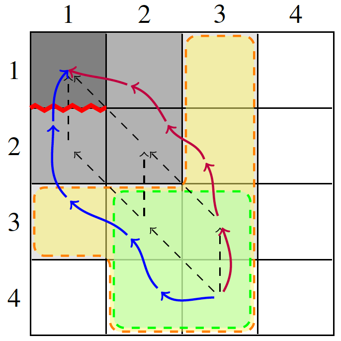
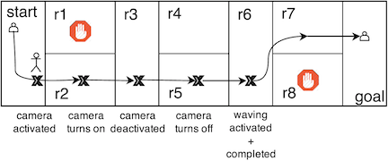
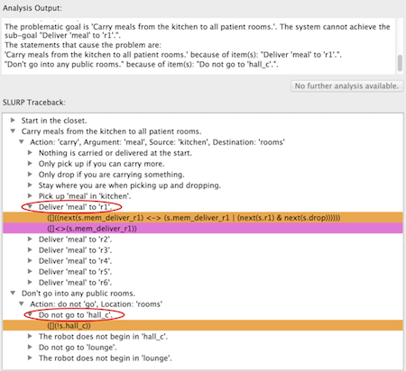

Scalable Task & Motion Planning with Temporal Logic SpecificationsLightweight methods for baking properties into system behavior have shown promise for scaling correct-by-construction synthesis beyond illustrative examples and to real-world domains. We have been developing methods for enforcing temporal logic specifications on the outputs of state-of-the-art search-based and sampling-based robotic task and motion planning. These methods are effective at imposing constraints and costs that are automatically generated from logical specifications.Relevant publications: [IROS17_1] [IROS17_2] |
 |
Model Predictive Control Synthesis from Timed LogicsWith colleages at UC Berkeley, I have created a framework for posing model-predictive control tasks as synthesis from signal temporal logic specifications. Motivating case studies include smart building-level (“micro-grid”) power systems with controllable loads and generators, and desired timed properties such as the maximum period of power loss during failures or outages.Relevant publications: [ADHS15] [HSCC15] [CDC14] [CyPhy14] |
 |
Provably Correct Control for Collaborative Robot TeamsIn ongoing work with colleagues at Cornell University, USC and MIT, I am working on various methods for synthesizing centralized and decentralized controllers that guarantee safe execution and goal fulfillment for complex tasks involving teams of robots.Relevant publications: [ISRR15] [IROS14] [ICRA14] |
 |
Scaling Receding Horizon Control Synthesis for LTLThe goal of this project is to improve the scalability of synthesis of reactive hybrid controllers from Linear Temporal Logic specifications in the GR(1) fragment. This work is motivated by large road networks of autonomous vehicles, which much plan in a receding horizon fashion, while adhering to comolicated high-level decision-making specifications. This is an ongoing project in collaboration with researchers in Singapore and Sweden.Relevant publications: [IROS15] [ACC15] |
 |
Timing Semantics for Controller Synthesis from High-Level SpecificationsThe goal of this project is to automatically constructing robot hybrid controllers that guarantee safe execution and goal fulfilment for tasks involving low-level controllers of varying execution times. I proposed and implemented a synthesis algorithm that guarantees safety when simultaneously executing both slow motion and fast action controllers. I also addressed challenges in extending the solution to the general problem of multiple and unknown controller execution times.Joint work with Nir Piterman, Cameron Finucane and Hadas Kress-Gazit. Relevant publications: [IROS12_a] [ICRA13][TRO15] |
 |
Explaining Unsynthesizable Specifications For High-Level Robot BehaviorThis project aims to find suitable explanations of unsynthesizable LTL specifications in the robot control domain, by exploiting the structure of the problem and using existing and novel techniques in formal methods. It also proposes an interactive game for demonstrating environment winning strategies, based on existing techniques for explaining unrealizability, in which the user attempts to fulfill the robot specification against an adversarial environment. The algorithm and game are implemented as features within the LTLMoP toolkit for robot mission planning.Joint work with Hadas Kress-Gazit. Relevant publications: [CAV11] [ICRA12] [TRO13] [RSS13] [IROS13] [SYNT14] |
 |
Older Projects
Epistemic Characterization of Cryptographic Concepts Using Modal LogicThis project provided an extended modal logic syntax and semantics for describing a range of cryptographic properties. We defined syntax and semantics for new operators and proposed formulas using these new operators to characterize zero knowledge and several variants including concurrent zero knowledge and proofs of knowledge.Joint work with Joseph Halpern and Rafael Pass. Relevant publications: [TARK09] |
Computational Models of Games With Time PressureThe goal of this project is a computational model for capturing game-theoretic properties of time pressure in games such as speed chess and deadline-based negotiations. I studied formal frameworks for reasoning about the strategic allocation of time in games under time pressure, and ran computer chess simulations with several time-pressure motivated strategies to find interesting equilibria based on the allocation of time to different stages of the game.Joint work with Joseph Halpern, Rafael Pass and Bart Selman. |
Learning Primitive Predicates for Probabilistic PlanningThe goal of this project was to create a bootstrapping framework for probabilistic planing using supervised learning of task-specific primitive predicates. To this end, I proposed features for learning the predicate ``on" in the Blocks World domain, for the task of stacking blocks, and designed and conducted user studies to collect a dataset for supervised learning of the concept of ``on". I then modified an existing planner to use the learned definitions of ``on", and evaluated performance against a set of commonly used definitions.This work was part of my senior honors thesis in 2007, co-advised by Leslie Kaelbling (MIT) and Ellen Hildreth (Wellesley College). |
Multi-document Summarization of Restaurant ReviewsThis project applied data-mining and multi-document summarization techniques towards the goal of producing concise summaries of a collection of restaurant reviews. I collected a dataset of textual reviews and corresponding numerical positivity score from online review websites, proposed relevant features for multi-class classification of reviews into degrees of positivity, and used SVM classification to predict degree of positivity.This work took place in 2006 as part of an undergraduate summer research opportunity under Regina Barzilay in the MIT Spoken Language Systems Lab. |
Size-based Biases in the Perception of Human MotionThis project aimed to uncover guidelines for producing more compelling, low-cost animations of human motion based on inherent biases in the perception of motion. I designed and implemented a series of perceptual experiments to study the basis of recognition of human motion, with the goal of uncovering guidelines for what classifies a motion as human and aids its recovery from abstract representation. This included examining the effects of scaling motion with size, with the goal of showing that scaling motion correctly with size preserves the believability of the animation.This work was part of a 2005 CRA-W Distributed Mentor Project under Jessica Hodgins at the Carnegie Mellon University Graphics Lab. |